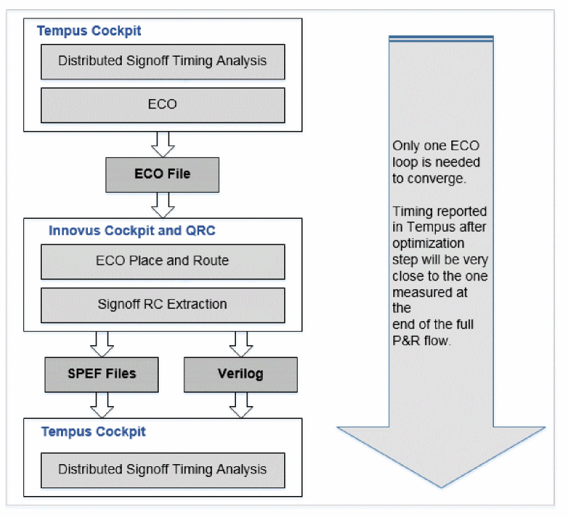

Signoff ECO Flow
The diagram below shows how Tempus ECO fits in the flow. The design is first loaded in Tempus for signoff timing analysis. To fix any remaining timing violations, Tempus ECO is run, which generates an ECO file. That is then taken to the implementation tool to implement the Tempus ECOs in the design. After the Tempus ECO is implemented, ECO place and route is done and then the design is re-extracted. The design or Verilog netlist after Tempus ECO implementation and the re-extracted SPEF files are then brought back into Tempus to run signoff timing analysis.

Related Topics
- Signoff ECO Overview
- Key Features of Signoff ECO
- Setting Up Signoff ECO Environment
- Signoff Optimization Use Models
- Basic Signoff ECO Optimization Techniques
Return to top